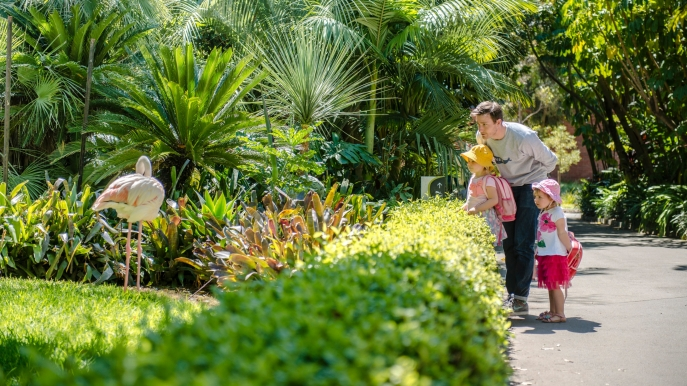
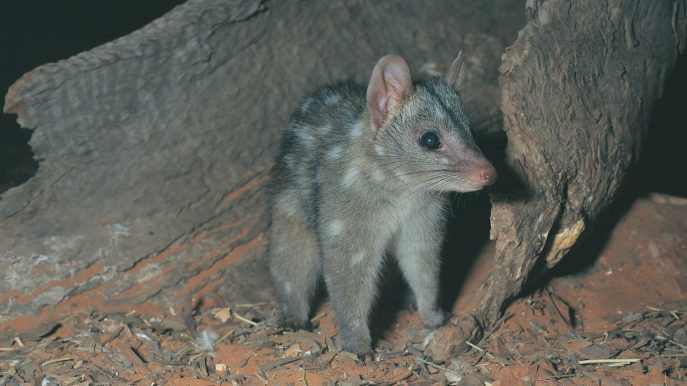
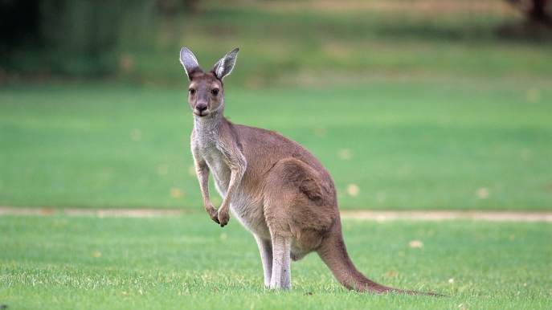
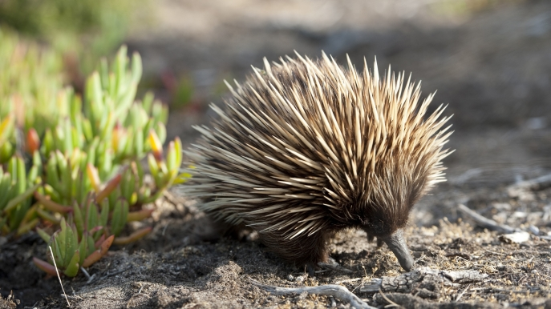
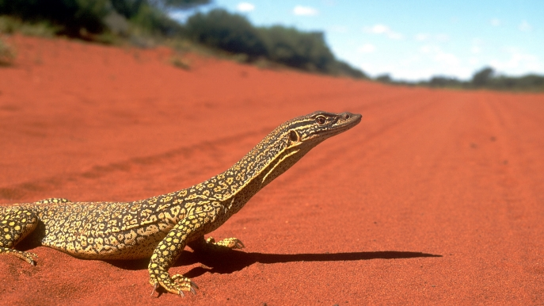
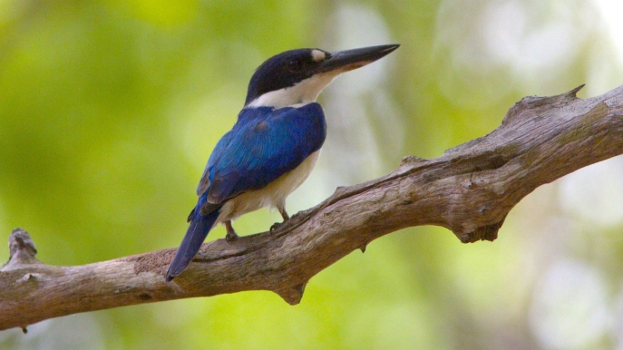
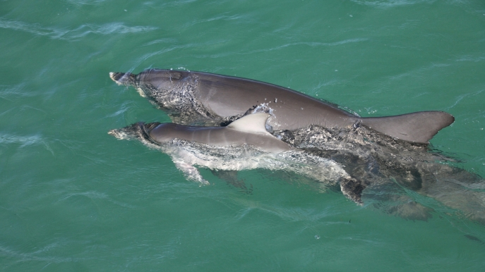

NATURALEZA EN AUSTRALIA

A poca distancia del centro de Sydney las playas son arenosas, inmensos parques nacionales y en los suburbios se encontrara con la autentica forma de vida de la poblacion. En el Sur de Nueva Gales existen mas de 820 parques nacionales y reservas naturales. Protegen a los paisajes, las selvas tropicales y al resistente arbusto a los desiertos.
Cuenta con numerosos parques y plazas que dan un aspecto bello de jardin a la ciudad. Se encontrara con el hermoso parque Waratah Park y el zoologico Taronga Mosman, que podra recorrer desde el Circular Quay.
Ambos puntos de interes cultural son visitados por los miles de turistas de todo el mundo que estan fascinados con los canguros, koalas, cocodrilos y aves exoticas. A demas de todo esto son decenas las playas cercanas a la ciudad que podemos visitar, y otras multiples actividades al aire libre que se pueden realizar.
Mamiferos

En Australia no hay animales predadores de gran porte, el dingo o perro salvaje, es nuestro mamifero carnivoro mas grande. Otros animales carnivoros unicos incluyen el numbat, el cuol y el demonio de Tasmania, pero ninguno de ellos es mas grande que un gato domestico comun.
Los dingos se encuentran en toda Australia, excepto en Tasmania. Los mejores lugares para verlos son: Fraser Island en Queensland, Kimberley en Australia Occidental y en los desiertos del Territorio del Norte y en Australia Meridional. Los numbats solamente se encuentran en Australia Occidental y aparte de los parques de naturales, solo puede ver a los demonios de Tasmania en su entorno natural en Tasmania. Los cuoles, una especie en peligro, tambien son dificiles de observar en su habitat natural, pero habitan los bosques humedos del sureste de Australia y Tasmania, y una mediana area del norte de Queensland.
El bilby, un miembro de la familia de los bandicuts, se puede ver en el Parque Nacional de Francois Peron en Australia Occidental.
Marsupiales

En Australia habitan mas de 140 especies de marsupiales, incluyendo canguros, ualabies, koalas y wombats.
Tenemos 55 especies nativas diferentes de canguros y ualabies. El porte y el peso de los canguros y ualabies varian considerablemente, desde medio kilogramo hasta 90 kilogramos. La principal diferencia entre ellos es el porte, los ualabies tienden a ser mucho mas chiquitos. La estimacion de la poblacion de canguros de Australia varia entre 30 y 60 millones. Seguramente le resultara facil ver canguros en su entorno natural en la mayoria de las areas rurales de Australia. En Victoria, vealos en Anglesea en la carretera Great Ocean Road y en los Grampians. Vealos tambien en la Isla Canguro y en la cordillera Flinders en Australia Meridional. Acerquese en los Parques Nacionales de Namadgi y Kosciuszko en los Alpes Australianos, en Pebbly Beach en Nueva Gales del Sur y en Maria Island en Tasmania. En las regiones del interior de Australia, podra verlos frecuentemente saltando a traves del camino. Los ualabies se encuentran esparcidos por toda Australia, en especial en las areas mas remotas, rocosas y escarpadas. Vealos en la cordillera Flinders de Australia Meridional, en el Parque Nacional de Freycinet de Tasmania y en los Parques Nacionales de Namadgi y Kosciuszko en los Alpes Australianos.
El koala es el favorito de todos, pero tenga presente que no es un oso. Puede divisar a los koalas por toda la costa este templada de Australia. Algunos de los lugares que frecuentan principalmente incluyen la Reserva Natural de Tidbinbilla cerca de Canberra; Puerto Stephens en Nueva Gales del Sur y la Reserva de koalas de Lone Pine en Queensland. Vealos en su habitat natural en Phillip Island en Victoria y en el Parque Nacional de Yanchep en Australia Occidental.
El wombat es otra de las criaturas que encontrara aqui; estos corpulentos animales de madriguera pueden pesar hasta 36 kg. Son dificiles de ver en su entorno natural, pero algunos de los mejores lugares para observarlos son el Parque Nacional de Kosciuszko en Nueva Gales del Sur, Wilsons Promontory en Victoria, Cradle Mountain-Lake St Clair en Tasmania y los parques nacionales de Australia Meridional.

Reptiles

Australia tiene mas especies de serpientes venenosas que cualquier otro continente; de hecho, aqui se encuentran veintiuna de las veinticinco mas mortiferas. Pero no todas son venenosas; tambien tenemos algunas asombrosas piton y serpientes de arboles.
Tambien somos famosos por nuestros cocodrilos, tanto de agua dulce como de agua salada. El Parque Nacional Kakadu y Kimberley son excelentes lugares para ver a los cocodrilos en su habitat natural.
Existen cinco especies de tortugas marinas en peligro, que anidan y ponen huevos en ciertas playas en la temporada; y ocho especies de tortugas de agua dulce. El Arrecife de Ningaloo en Australia Occidental y Eco Beach en Broome son lugares ideales para ver a las tortugas.
En Australia Central y en la cordillera Flinders de Australia Meridional es posible ver una variedad de reptiles, incluyendo dragones barbudos, perenties y lagartos de lengua azul.
Aves

Tenemos mas de 800 especies de aves en Australia, y casi la mitad no se encuentran en ningun otro lugar. Van desde las chiquitas aves melifagas hasta los grandes emus que no vuelan y que tienen casi dos metros de altura . Vea casuarios en nuestra selva tropical, cucaburras en nuestras zonas boscosas y emus en los bosques esclerofilos y en los bosques de la sabana. Acerquese a los pinguinos en la isla Canguro en el sur de Australia, y en la isla Philip en Victoria, o escuche la llamada invernal del ave lira en el Parque Nacional Wollumbin y en los bosques humedos de Gondwana en el sur de Queensland.
Hay 55 especies de loros en Australia, que incluyen una gran variedad de cacatuas, rosellas, loriquitos, cocotillas, pericos y periquitos que se ven en zonas rurales y urbanas.
La isla Canguro es uno de los mejores lugares para ver los hermosos lobos marinos australianos en su hábitat natural.
Animales Marinos

Nuestro medio ambiente marino alberga mas de 4 000 de las 22 000 especies de peces del mundo, asi como 30 de las 58 especies de pradera marina del mundo. Tambien tenemos el sistema de arrecifes de coral mas grande del mundo, la Gran Barrera de Coral, declarada Patrimonio de la Humanidad por la UNESCO, donde habitan innumerables especies de peces coloridos, como el precioso pez payaso que aparece en la pelicula Buscando a Dory. Tambien tenemos unas 1 700 especies diferentes de corales.
Las especies marinas mas grandes son la ballena jorobada, la ballena franca austral, la orca, el dugongo (o manati), varias especies de delfines y varios tiburones diferentes. Aviste ballenas durante su migracion en la costa este entre mayo y noviembre, o nade con los tranquilos tiburones ballena en el arrecife Ningaloo en Australia Occidental.
La isla Canguro es uno de los mejores lugares para ver los hermosos lobos marinos australianos en su habitat natural.